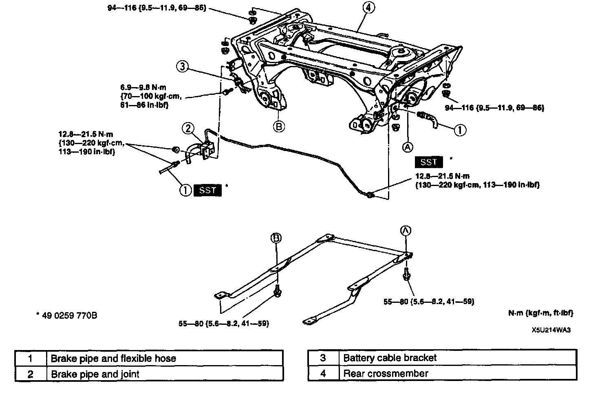

Rear Cross-Member: Service and Repair
REAR CROSSMEMBER REMOVAL/INSTALLATION
Caution:
- Performing the following procedures without first removing the ABS wheel-speed sensor may possibly cause an open circuit in the harness if it is pulled by mistake. Before performing the following procedures, remove the ABS wheel-speed sensor (axle side) and fix it to an appropriate place where the sensor will not be pulled by mistake while servicing the vehicle.
1. Disconnect the parking brake cable.
2. Remove the rear crossbar.
3. Remove the differential and the power plant frame.
4. Remove the wheel hub and knuckle with the driveshaft.
5. Remove the rear upper arm.
6. Remove the rear lower arm.
7. Remove the rear stabilizer.
8. Remove in the order indicated in the table.
9. Install in the reverse order of removal.
10. After installation, do the following steps.
1) Adjust the parking brake lever stroke.
2) Adjust the rear wheel alignment.